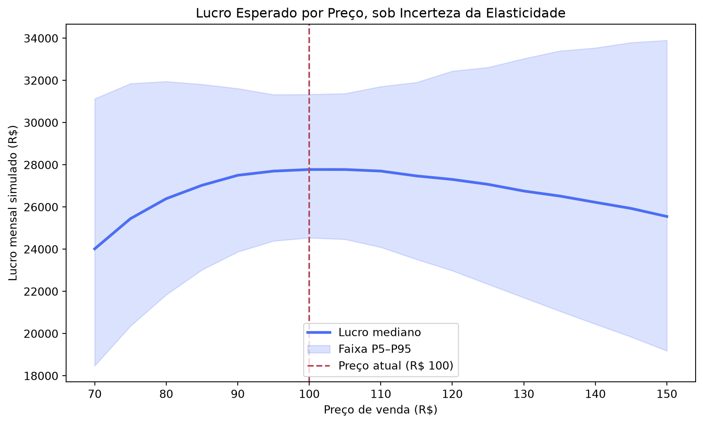

Vale a Pena Subir o Preço? A Simulação de Monte Carlo Aplicada Sobre a Elasticidade
python
simulação de monte carlo
marketing analytics
pricing
elasticidade de preço
alfabetização de dados
data literacy
Author
Jobenil Júnior
Published
September 20, 2026
“Se eu subir o preço em 20%, quantos clientes eu perco?” Essa é, sem exagero, uma das perguntas mais caras que existem em marketing e a mais mal respondida. Quase sempre alguém responde com um número seco, tipo “a demanda cai uns 15%”, como se essa relação fosse uma lei física gravada em pedra. Na prática, ninguém conhece a elasticidade-preço da demanda exata do próprio produto, ela é estimada, tem incerteza, e um erro pequeno nessa estimativa pode transformar um aumento de preço promissor em um tiro no pé. É exatamente esse tipo de incerteza que a Simulação de Monte Carlo foi feita para tratar, e a ideia de usá-la em decisões de negócio tem uma origem histórica bem concreta.
💸 O Problema: Subir o Preço é Apostar Sem Saber a Regra do Jogo
Toda decisão de precificação esconde uma equação de duas pontas: preço mais alto significa mais margem por unidade vendida, mas também significa menos unidades vendidas. O ponto de equilíbrio entre essas duas forças depende da elasticidade-preço da demanda, ou seja, o quanto a quantidade vendida reage a uma variação no preço.
O problema é que essa elasticidade não é um número que se lê em algum lugar. Ela é estimada a partir de dados históricos, pesquisas de intenção de compra ou testes A/B, e todos esses métodos entregam uma faixa de valores plausíveis, não um valor único e definitivo. Um analista que assume “a elasticidade é -1,5” está, na verdade, escondendo um intervalo de incerteza real atrás de uma falsa precisão.
Tratar a elasticidade como um número fixo é a mesma ficção estatística de tratar o CPC de uma campanha como uma média imóvel: conveniente para a planilha, perigosa para a decisão.
🏛️ Um Pouco de História: De Los Alamos às Planilhas de Pricing
O método de Monte Carlo nasceu na década de 1940, quando Stanislaw Ulam e John von Neumann o desenvolveram no Laboratório de Los Alamos para simular a difusão de nêutrons em reações nucleares, um problema físico complexo demais para ser resolvido com equações fechadas. Mas quem trouxe essa lógica de simular milhares de cenários aleatórios para dentro das decisões de negócio, incluindo o preço de venda como uma variável incerta, foi o pesquisador em pesquisa operacional David B. Hertz.
Em 1964, Hertz publicou na Harvard Business Review o artigo “Risk Analysis in Capital Investment”, no qual propôs abandonar as projeções de investimento baseadas em um único cenário “mais provável” e, em vez disso, atribuir uma distribuição de probabilidade a cada variável incerta do negócio, entre elas o preço de venda, o tamanho do mercado e a taxa de crescimento da demanda, sorteando milhares de combinações para gerar uma distribuição completa de retornos possíveis. Foi o primeiro uso amplamente reconhecido do Monte Carlo fora dos laboratórios de física, aplicado diretamente a decisões corporativas, e é o ancestral direto de qualquer simulação de pricing que trata a reação do mercado a um preço como algo incerto, e não como um fato.
Hertz não inventou o Monte Carlo, mas foi um dos primeiros a perceber que toda decisão de negócio relevante já era, disfarçadamente, uma aposta sob incerteza.
📉 Modelando a Elasticidade Como o Que Ela É: Uma Faixa, Não um Número
Para simular o efeito do preço sobre a demanda, usa-se a curva de demanda de elasticidade constante: \(Q = Q_0 \times (P / P_0)^{e}\), em que \(Q_0\) é a quantidade vendida no preço de referência \(P_0\), e \(e\) é a elasticidade-preço (sempre negativa, já que preço mais alto reduz a quantidade demandada). Em vez de fixar \(e\) em um único valor, define-se um intervalo plausível, baseado no histórico de vendas ou em benchmarks da categoria, e sorteia-se um valor diferente a cada simulação.
🐍 Simulando 10.000 Cenários para Cada Preço Candidato
Vamos simular a precificação de um produto que hoje é vendido a R$ 100, com custo variável de R$ 45 por unidade e demanda de referência em torno de 500 unidades/mês. A elasticidade-preço é incerta, entre -2,5 (mercado muito sensível a preço) e -1,1 (mercado pouco sensível), e a demanda-base também varia de mês a mês entre 420 e 600 unidades, com 500 como valor mais provável.
import numpy as npimport pandas as pdnp.random.seed(2026)n_simulacoes =10_000custo_unitario =45preco_referencia =100precos_testados = np.arange(70, 151, 5)linhas = []for preco in precos_testados:# elasticidade-preço: incerta, entre -2,5 (muito sensível) e -1,1 (pouco sensível) elasticidade = np.random.uniform(-2.5, -1.1, n_simulacoes)# demanda-base no preço de referência: também varia mês a mês q0 = np.random.triangular(420, 500, 600, n_simulacoes)# curva de demanda de elasticidade constante quantidade = q0 * (preco / preco_referencia) ** elasticidade lucro = (preco - custo_unitario) * quantidade linhas.append({"preco": preco,"lucro_p5": np.percentile(lucro, 5),"lucro_mediana": np.percentile(lucro, 50),"lucro_p95": np.percentile(lucro, 95), })tabela_precos = pd.DataFrame(linhas)tabela_precos.round(0)
preco
lucro_p5
lucro_mediana
lucro_p95
0
70
18481.0
24020.0
31133.0
1
75
20364.0
25452.0
31855.0
2
80
21846.0
26399.0
31953.0
3
85
23026.0
27033.0
31819.0
4
90
23877.0
27507.0
31621.0
5
95
24394.0
27705.0
31331.0
6
100
24542.0
27781.0
31340.0
7
105
24473.0
27780.0
31382.0
8
110
24098.0
27707.0
31713.0
9
115
23523.0
27476.0
31911.0
10
120
22985.0
27310.0
32447.0
11
125
22343.0
27078.0
32621.0
12
130
21706.0
26761.0
33036.0
13
135
21071.0
26524.0
33400.0
14
140
20453.0
26227.0
33545.0
15
145
19847.0
25936.0
33800.0
16
150
19187.0
25554.0
33904.0
Cada linha representa um preço candidato e a distribuição completa de lucro mensal simulado para esse preço, considerando as 10 mil combinações possíveis de elasticidade e demanda-base.
📊 Visualizando o “Leque” de Lucro por Preço
import matplotlib.pyplot as pltplt.figure(figsize=(9, 5.5))plt.plot(tabela_precos["preco"], tabela_precos["lucro_mediana"], color="#4C6EF5", linewidth=2.5, label="Lucro mediano")plt.fill_between(tabela_precos["preco"], tabela_precos["lucro_p5"], tabela_precos["lucro_p95"], color="#4C6EF5", alpha=0.2, label="Faixa P5–P95")plt.axvline(preco_referencia, color="#B5495B", linestyle="--", linewidth=1.5, label="Preço atual (R$ 100)")plt.xlabel("Preço de venda (R$)")plt.ylabel("Lucro mensal simulado (R$)")plt.title("Lucro Esperado por Preço, sob Incerteza da Elasticidade")plt.legend()plt.tight_layout()plt.show()

O formato de leque é o ponto central do gráfico: perto do preço atual, a incerteza sobre a elasticidade importa pouco, porque a quantidade vendida muda pouco. Mas quanto mais o preço se afasta da referência, para cima ou para baixo, mais a faixa entre o cenário pessimista (P5) e o otimista (P95) se alarga, o resultado passa a depender cada vez mais de qual valor de elasticidade realmente se concretizar.
🔍 Vale a Pena Subir o Preço de R$ 100 para R$ 120?
Uma pergunta direta de negócio merece uma resposta direta. Em vez de comparar médias, comparamos os mesmos 10.000 cenários de elasticidade e demanda nos dois preços, simulação pareada, para isolar exatamente o efeito da mudança de preço.
elasticidade = np.random.uniform(-2.5, -1.1, n_simulacoes)q0 = np.random.triangular(420, 500, 600, n_simulacoes)def lucro_no_preco(preco): quantidade = q0 * (preco / preco_referencia) ** elasticidadereturn (preco - custo_unitario) * quantidadelucro_atual = lucro_no_preco(100)lucro_proposto = lucro_no_preco(120)diferenca = lucro_proposto - lucro_atualprob_melhora = (diferenca >0).mean()print(f"Probabilidade de o lucro aumentar ao subir o preço para R$ 120: {prob_melhora:.1%}")print(f"Variação mediana de lucro: R$ {np.median(diferenca):,.0f}/mês")
Probabilidade de o lucro aumentar ao subir o preço para R$ 120: 43.9%
Variação mediana de lucro: R$ -433/mês
O resultado é revelador: mesmo com uma margem por unidade bem maior a R$ 120, a chance de o lucro total realmente aumentar fica abaixo de 50%, porque, em boa parte dos cenários plausíveis de elasticidade, a queda no volume de vendas consome o ganho de margem. Um diretor de marketing que olhasse só para “margem maior = lucro maior” cairia numa armadilha que a simulação deixa exposta.
🚀 Da Estatística à Estratégia de Pricing
Esse é o valor prático da simulação para quem decide preço: ela não entrega uma resposta única e confiante demais, entrega a probabilidade real de cada decisão dar certo, dado que ninguém conhece a elasticidade com exatidão. O mesmo raciocínio serve para decidir entre dois planos de assinatura, testar um desconto promocional, ou avaliar se vale a pena reposicionar um produto para um público disposto a pagar mais. Em qualquer um desses casos, a pergunta certa não é “qual preço maximiza o lucro?”, é “qual preço maximiza o lucro considerando que não sabemos exatamente como o mercado vai reagir?”.
🎯 Em resumo:
Etapa
O que fizemos
Por quê
Curva de demanda
Elasticidade constante, \(Q = Q_0(P/P_0)^e\)
Ligar preço e quantidade vendida de forma realista
Incerteza da elasticidade
Intervalo de -2,5 a -1,1 sorteado a cada simulação
Substituir um valor fixo (e falso) por uma faixa plausível
Grade de preços
17 preços candidatos, 10.000 cenários cada
Comparar o “leque” de resultados possíveis, não só a média
Comparação pareada
Mesmos cenários testados em dois preços
Isolar o efeito real de mudar o preço
Interpretação
P(lucro aumenta) e variação mediana
Transformar a simulação em decisão de pricing
A melhor pergunta de pricing não é “qual é o preço ideal?”, é “qual é a chance de este preço ser melhor do que o que eu já pratico?”.
Da próxima vez que alguém propuser um novo preço com base numa elasticidade “de cabeça”, vale simular antes de decidir. Já testou algo parecido na precificação do seu produto ou serviço? Me chama no WhatsApp e me conta o resultado.
EDA | TESTE T | ENQUETES | ANOVA | MODELOS DE REGRESSÃO | ANÁLISE FATORIAL | MODELAGEM DE EQUAÇÕES ESTRUTURAIS | TRI | RASCH MODELS | MACHINE LEARNING